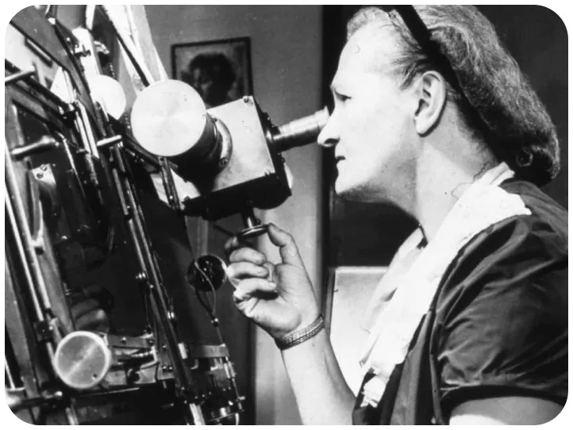

Sa théorie.
Sa vulgarisation.Cecilia Payne-Gaposchkin a révolutionné l'astronomie en démontrant que les étoiles sont principalement composées d'hydrogène et d'hélium.
Avant sa découverte, les scientifiques pensaient que la composition des étoiles était similaire à celle de la Terre, ce qui limitait considérablement la compréhension de la structure et de l'évolution de l'univers.
Pour parvenir à cette conclusion, Payne-Gaposchkin a utilisé l'analyse spectroscopique. Cette méthode consiste à étudier la lumière émise par les étoiles et à identifier les éléments chimiques présents grâce aux lignes spectrales.
C'est grâce à cette technique qu'elle a pu mesurer les proportions d'hydrogène et d'hélium et révéler la véritable nature des astres.
L'impact de cette découverte sur la science moderne est immense. Aujourd'hui, son travail sert de fondation à l'astrophysique et continue d'influencer les recherches sur les étoiles et la composition des galaxies.
Schéma.